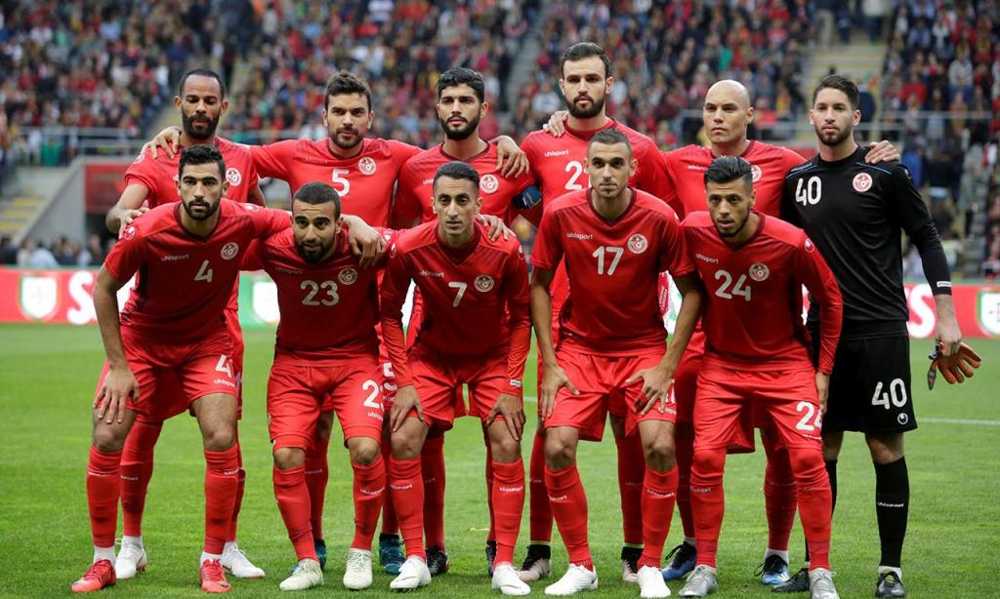

A Tunísia é um país situado no Norte da África, limitado pelo Mar Mediterrâneo e pelo Deserto do Saara. Sendo a capital Túnis
A seleção da Tunísia participará de sua sexta edição da Copa do Mundo de Futebol em 2022. A Tunísia também esteve presente nos mundiais de 1978, 1998, 2002, 2006 e 2018. Em todas as suas participações os tunisianos não passaram da primeira fase. Na Copa do Mundo de 1978 a Tunísia fez história, mesmo não passando da primeira fase. A Tunísia se tornou a primeira seleção africana a vencer uma partida de Copa do Mundo, ao superar o México por 3 a 1 no jogo de estreia em Rosário, Argentina. Na Copa das Nações Africanas a Tunísia foi campeã em 2004.
Copa das Nações Árabes em 1963 e um Campeonato Africano das Nações em 2004